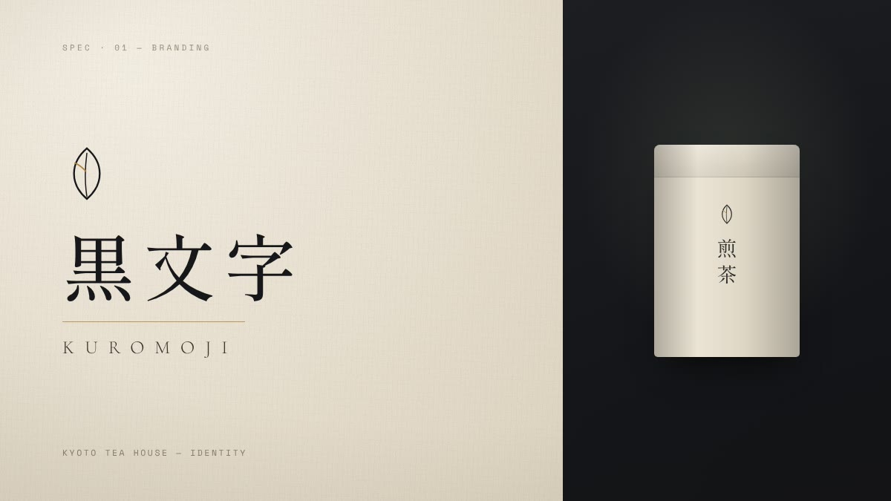
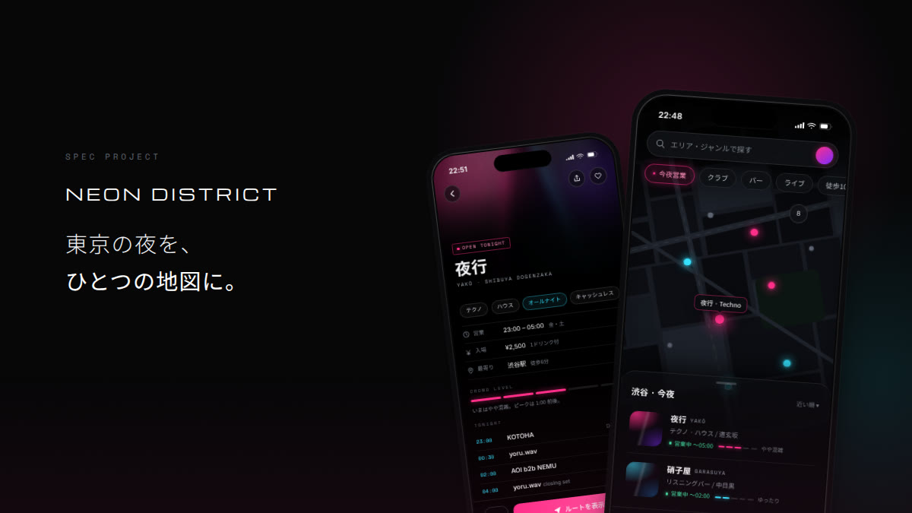
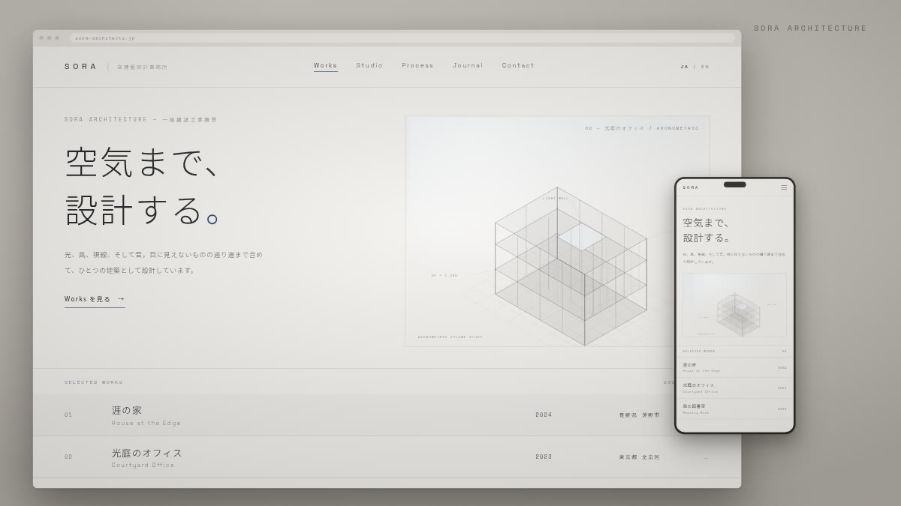
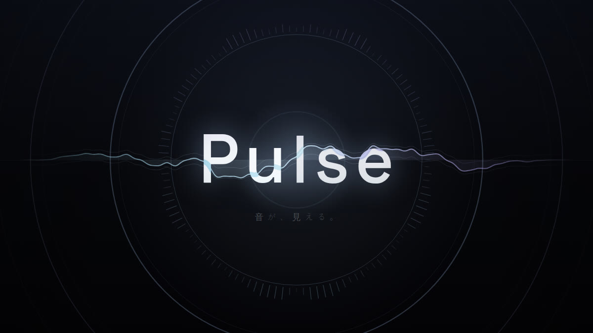
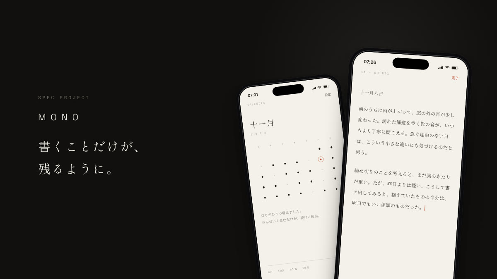
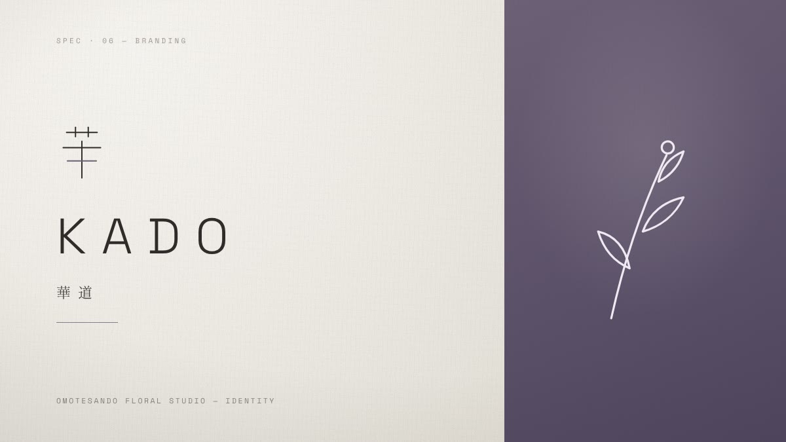

01

Spec · Branding
KUROMOJI
京都の老舗茶舗のリブランディング。200年の伝統を「静寂の中の透明感」というコンセプトで再解釈。
02
Spec · UI / UX Design
Neon District
東京のナイトライフ検索アプリ。散在する夜の情報を一つのガラスのようなインターフェースに統合。
03
Spec · Web Design
SORA Architecture
建築設計事務所のWebサイトリデザイン構想。空間の透明性を体感できるデジタル体験の Spec。
04
Spec · Motion Design
Pulse
音楽ストリーミングサービスのブランドモーション。音の波動を透明な光の運動に変換。
05
Spec · UI / UX Design
Mono
ミニマルジャーナリングアプリのUI設計。書くことに集中できる、削ぎ落とされたインターフェース。
06
Spec · Branding
KADO
生花スタジオのビジュアルアイデンティティ。華道の精神性と現代デザインの融合。